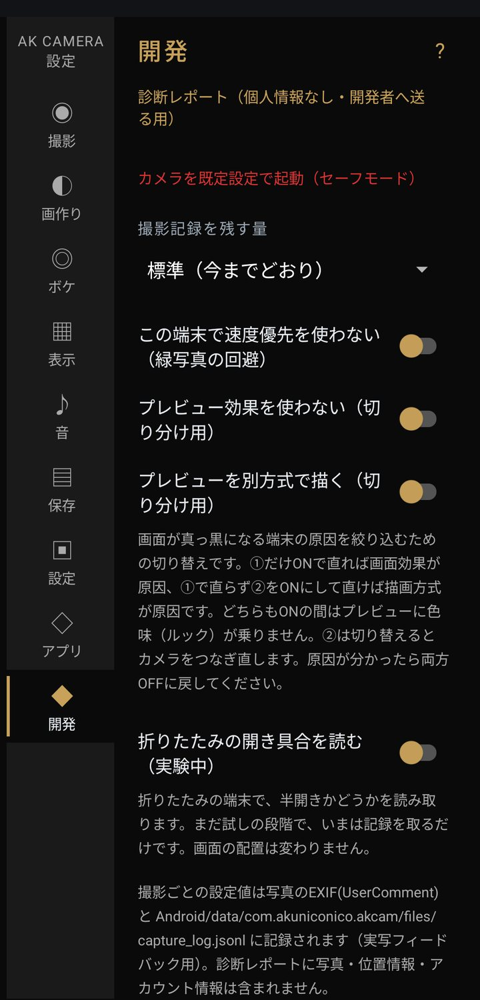

設定：開発

不具合を調べるためのタブ。ふだん触る必要はありません。
- 診断レポート
- そのときの状況を文章にまとめます。「コピー」「共有」「ファイルに保存」から、メールなどに添えて送れます。写真・位置情報・アカウント情報は入りません。送る前に中身をそのまま読めます。
- カメラを既定設定で起動（セーフモード）
- 露出を A、合成・HDR・ボケ・ナイトモード・ピーキングを OFF、画質を自動、レンズを背面に戻して、カメラをつなぎ直します。カメラがうまく開かないときに。ルックや透かしなどはそのままです。
- この端末で速度優先を使わない（緑写真の回避）
- 写真全体が緑になる端末で、アプリが自動で ON にします。OFF に戻すと、もう一度速度優先を試します。
- プレビュー効果を使わない / プレビューを別方式で描く（切り分け用）
- 撮影画面が真っ黒になる端末で、原因を絞り込むためのスイッチです。使い方は よくある質問 にあります。原因が分かったら両方 OFF に戻してください。